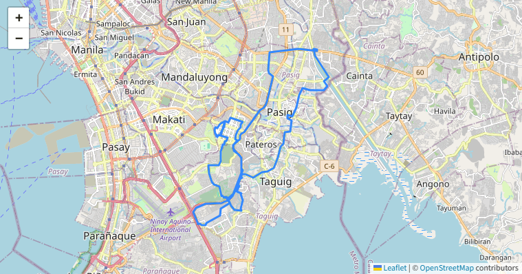
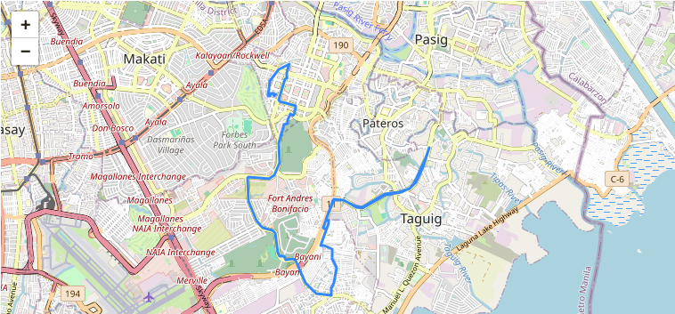
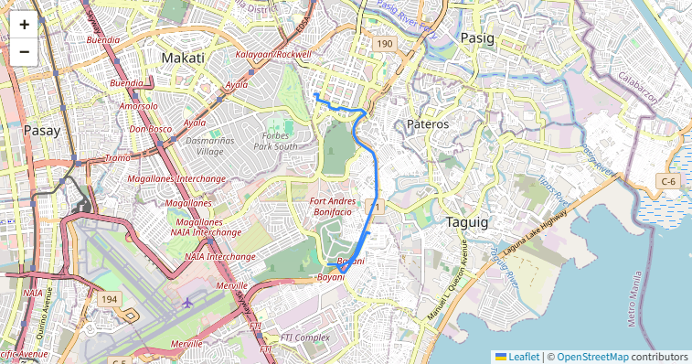

Two Wheels, One Soul
Freedom on every pedal stroke
Freedom on every pedal stroke
 Close
Close| Badge | Place | Description | Award | Jersey |
|---|---|---|---|---|
 |
1st Place (General Classification) | This tagging is for being first place in general areas other than the average speed and Elevation. - aka "Overall Award" | aka "maillot jaune": The yellow jersey is the most coveted piece of kit in professional cycling. The wearer is a rider who has completed the race in the least amount of time, and as such tops the overall or general classification (GC) of the race. |  |
| 1st Place (Speed) | This tagging is for being first place in terms of average speed maintained. - aka "Sprinter's Award" | aka "maillot vert": The green jersey relates to points awarded to riders according to the position they finish on each stage, with additional points for intermediate sprints during some stages also on offer. It is awarded to the rider with the most points. Sometimes it's a sprinter's game, sometimes more of an all-rounder. |  |
|
 |
1st Place (Altitude) | This tagging is for being first place in terms of Elevation reached. - aka "Mountain King Award" | aka "maillot à pois rouges": The white-with-red-dots jersey is given to the rider with the most mountains points (awarded to riders who manage to summit classified climbs first). Points vary depending on the category of each ascent, with more difficult climbs awarding more mountains points. |  |
 |
2nd Place Overall | This tagging is for being second place in general areas. | N/A | |
| 3rd Place Overall | This tagging is for being third place in general areas. | |||
| Rank (Speed) | Average Speed | Rank (Altitude) | Elevation | Rank (GC) | Distance | Time |
|---|---|---|---|---|---|---|
| 15 kph (Aug 21, 2024) | |
191 m (Aug 21, 2024) | |
16.6 km (Aug 21, 2024) | 01:07:00 (Aug 21, 2024) |
| Rank (Speed) | Average Speed | Rank (Altitude) | Elevation | Rank (GC) | Distance | Time |
|---|---|---|---|---|---|---|
| 12.1 kph (Aug 21, 2024) | |
41 m (Aug 21, 2023) | |
6.7 km (Aug 21, 2024) | 00:33:00 (Aug 21, 2024) |
| Rank (Speed) | Average Speed | Rank (Altitude) | Elevation | Rank (GC) | Distance | Time |
|---|---|---|---|---|---|---|
| 15 kph (Jun 17, 2024) | |
451 m (Jun 17, 2024) | |
47.2 km (Jun 17, 2024) | 03:08:00 (Jun 17, 2024) |
| Map | Recap | Date | Distance (km) | Time (HH:MM:SS) | Average Speed (kph) | Elevation (m) | Purpose | Rank (Distance) | Rank (Time) | Rank (Average Speed) | Rank (Altitude) |
|---|---|---|---|---|---|---|---|---|---|---|---|
 |
Click here | 06/17/2024 | 47.2 | 03:08:00 | 15 | 451 | Training | |
|
|
|
 |
Click here | 08/21/2024 | 16.6 | 01:07:00 | 15 | 191 | Bike to Work | |
|
|
|
 |
Click here | 08/21/2024 | 6.7 | 00:33:00 | 12.1 | 41 | Home from Work | |
|
|